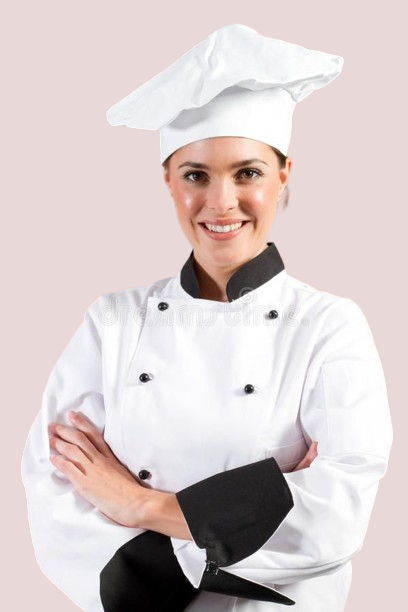
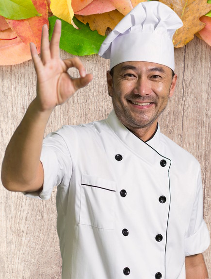
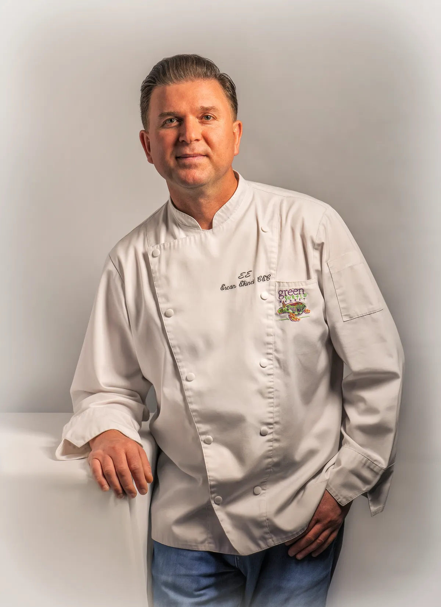
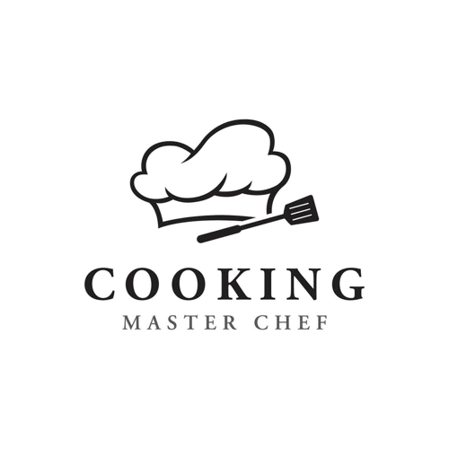

-->The Magicians We Know<--

Food Here Is Magic
Let's Meet Our Magicians
CHEFS DON'T MAKE MISTAKES, THEY MAKE NEW DISHES
Let's Meet Our Magicians

RANVEER BRAR
Ranveer Singh Brar (born 8 February 1978) is an Indian celebrity chef, Masterchef India judge, author, restaurateur and actor.He is well known as the host of popular Television food shows and as a judge in MasterChef India (Seasons four, six, seven and eight), alongside fellow chefs Sanjeev Kapoor (Season 4), Vikas Khanna (all seasons), Vineet Bhatia (Season 6), Garima Arora (Season 7) and Pooja Dhingra.
After completing his education at IHM, Brar began his career at the Taj Mahal Hotel. In 2001, at Fort Aguada Beach Resort in Goa, he opened "Morisco" a seafood restaurant, "il Camino" an Italian restaurant and "Fishtail" a small open air barbeque eatery. Back in Delhi in 2003, he was part of the newly opened Radisson Blu Hotel, Noida. He also became the youngest executive chef of his time in the country at the age of 25.
He then left for Boston, Massachusetts, where he opened "Banq", a fine Franco-Asian restaurant.Banq won numerous awards including the Best New Restaurant in the World by the magazine "Wallpaper". The restaurant is now permanently closed.Following this, he was appointed Corporate Chef for the One World Hospitality Group, one of the oldest restaurant groups in Boston.Back in India, he joined Novotel, Juhu Beach, Mumbai, as the Senior Executive Chef.
.png)

.png)
.png)
SANJEEV KAPOOR
Sanjeev k Tripathi(born 10 April 1964) is an Indian chef, television presenter & entrepreneur. He began his career in the hospitality industry in 1984 after completing the Diploma in Hotel Management from the Institute of Hotel Management Catering & Nutrition, Pusa, New Delhi. Kapoor is married to Alyona Kapoor, who is also a part of his business, Turmeric Vision Pvt. Ltd. (TVPL).
After working in many hotels at different places like Varanasi, New Zealand, etc. he became the youngest Executive Chef of Centaur Hotel in Mumbai in the year 1992. He is also the recipient of the Best Executive Chef of India Award by H & FS and the Mercury Gold Award at Geneva, Switzerland by Indian Federation of Culinary Associations. He is on board as one of the key members of the International Culinary Panel of Singapore Airlines
Padma Shri (2017)[3]- fourth highest Indian national honour Achieved the Guinness World Record by cooking 918 kg khichdi live at World Food India 2017, New Delhi.[4] Case Study on Sanjeev Kapoor Published By Harvard Association[5] ITA Award (2015) - For Popular Chef & Entrepreneur (Zaika-E-Hind) ITA Award (2010, 2004, 2002) - For Best Cookery Show ( Khana Khazana) National Award of 'Best Chef of India' by the Government of India.

VIKAS KHANNA
Vikas Khanna (born 14 November 1971) is an Indian chef, restaurateur, cookbook writer, filmmaker and humanitarian. He is one of the judges of MasterChef India since its beginning. He is based in New York City.He has also worked with top chefs including Gordon Ramsay, Eric Ripert, Bobby Flay and Jean-Georges Vongerichten. In 2019, he opened a restaurant called Kinara in Dubai. In 2020, he opened a restaurant called Ellora in Dubai. In 2024, he opened a restaurant, Bungalow in the East Village neighborhood of New York City.
Khanna was born in Amritsar, India in a Punjabi family. He did his schooling at St. Francis School, Amritsar. He was born with a leg deformity (club foot) and wasn't able to run until he was 13 years old. He graduated Manipal Academy of Higher Education in 1991 where he studied hotel management.He then studied at Culinary Institute of America and New York University.
Khanna had worked at Salaam Bombay and The Café at the Rubin Museum of Art in New York before he joined Junoon, an upscale Indian restaurant in Flatiron district of Manhattan. Junoon received a favorable review from Sam Sifton in The New York Times in its inaugural year and was awarded a Michelin star by the Michelin Guide for six consecutive years since 2011.
VINEET BHATIA
Vineet Bhatia MBE (born 9 December 1967) is an Indian chef, restaurateur, author, and media personality. He was the first Indian chef to be awarded a Michelin star. He opened two Rasoi restaurants, the first in Chelsea, London in 2004, and the second in Geneva, Switzerland, in 2008. Both restaurants received Michelin stars, in 2006 and 2009 respectively, making Bhatia the first and only chef of Indian origin to receive two Michelin stars.
After working in many hotels at different places like Varanasi, New Zealand, etc. he became the youngest Executive Chef of Centaur Hotel in Mumbai in the year 1992. He is also the recipient of the Best Executive Chef of India Award by H & FS and the Mercury Gold Award at Geneva, Switzerland by Indian Federation of Culinary Associations. He is on board as one of the key members of the International Culinary Panel of Singapore Airlines
Padma Shri (2017)[3]- fourth highest Indian national honour Achieved the Guinness World Record by cooking 918 kg khichdi live at World Food India 2017, New Delhi.[4] Case Study on Sanjeev Kapoor Published By Harvard Association[5] ITA Award (2015) - For Popular Chef & Entrepreneur (Zaika-E-Hind) ITA Award (2010, 2004, 2002) - For Best Cookery Show ( Khana Khazana) National Award of 'Best Chef of India' by the Government of India.
PANKAJ BHADOURIA
Pankaj Bhadouria[1] is the winner of MasterChef India Season 1 (2010). She was a school teacher who quit a 16-year-old job to participate in the first season of MasterChef India. She has hosted the TV shows Chef Pankaj Ka Zayka(StarPlus), Kifayati Kitchen(Zee Khana Khazana), 3 Course with Pankaj (Zee Khana Khazana), Rasoi se- Pankaj Bhadouria ke Saath(ETV), Sales Ka Baazigar.
She was the first MasterChef Winner worldwide to have an official MasterChef Cookbook[9] in her name and has written two more cookery books Barbie- I am a Chef, and Chicken from my Kitchen (Bloomsbury Publishing).Pankaj's passion for cooking has made her a personality of choice for many a brand.She is also the Brand Ambassador for MasterChef Travels Cox and Kings Worldwide.
Café by Default - Located in Lucknow, this café offers a variety of dishes with a mix of traditional and contemporary flavors. Tramp Tree Café - Also in Lucknow, this café is known for its cozy ambiance and diverse menu, including continental and Indian cuisine. The Culinary Court - This restaurant is part of the Hotel Clarks Avadh in Lucknow, where Chef Pankaj has crafted a menu that celebrates Awadhi cuisine.
Connect to our Magicians
Be the first to meet our and your favourite
Privacy Policy
Terms & Conditions
Copyrights @ All rights reserved.